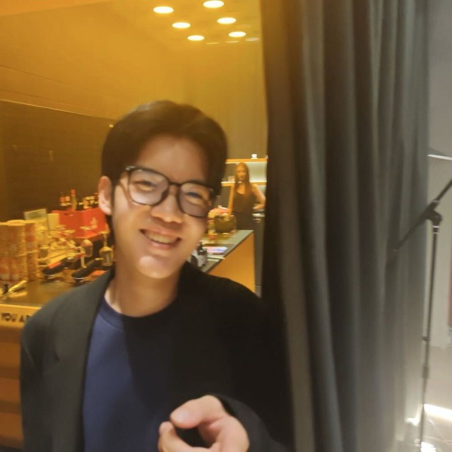
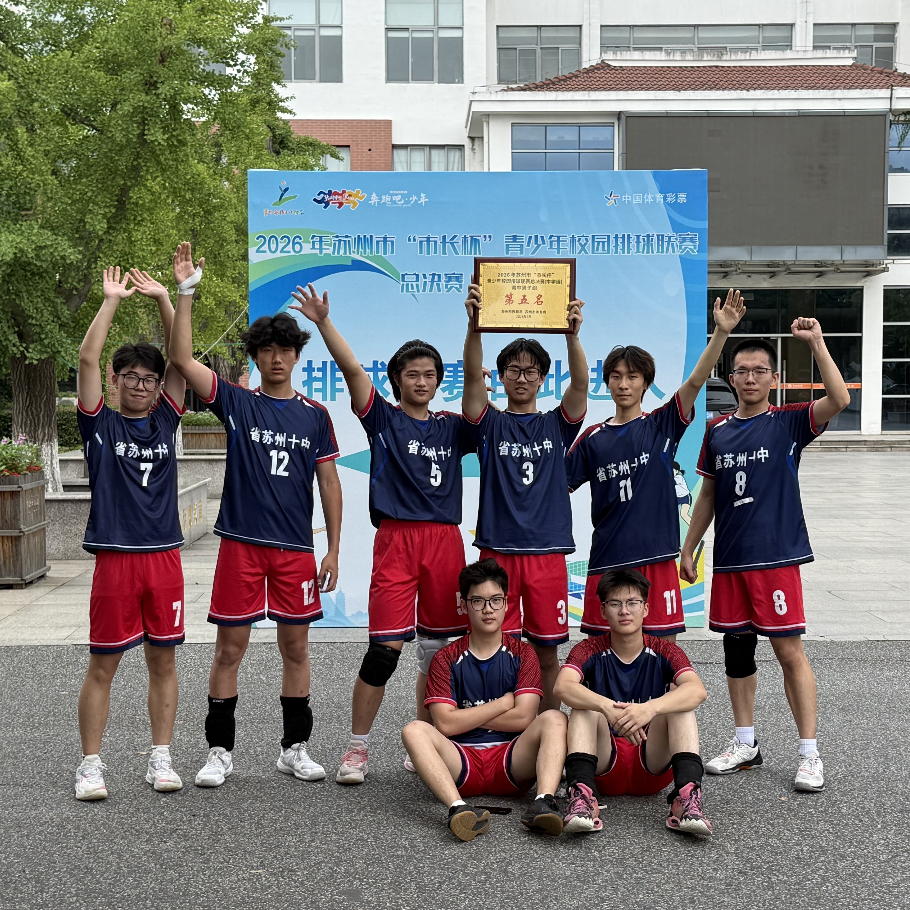
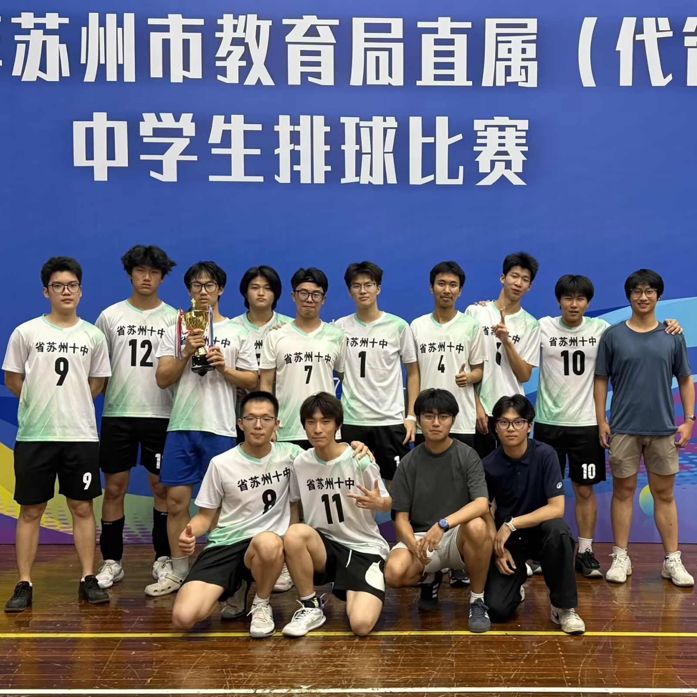
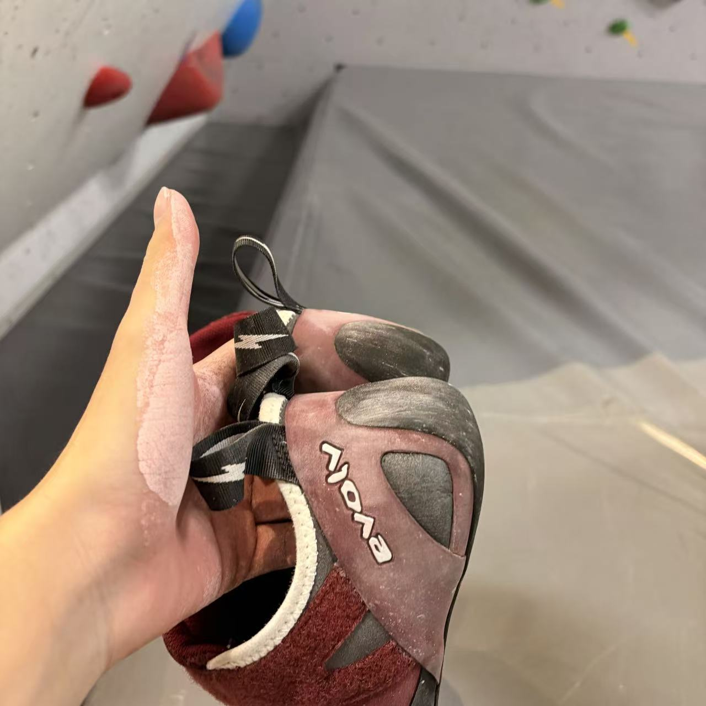
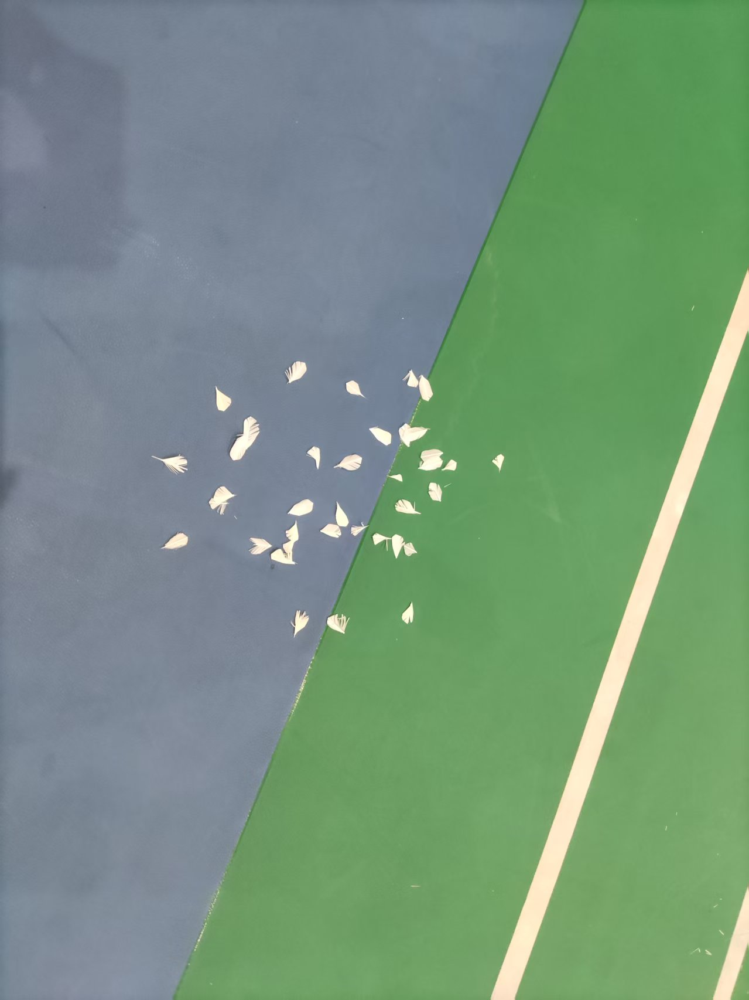

Hi, welcome
Born and raised in Suzhou, China. This September I'm starting the Foundation Programme at the University of Auckland, with undergraduate study beginning next March. My time is split between orchestra rehearsals, engineering prototypes, and the volleyball court — usually in that order on a good day.

About Me
I grew up in Suzhou, and this September I'm heading to the University of Auckland's Foundation Programme, with undergraduate study starting next March. Most of what I do falls into three buckets — music, invention, and sport — and I like it that way.
I started percussion at age 8, and it's stuck with me ever since — through the Poly Youth Orchestra, the Suzhou Youth Symphony Orchestra, and a handful of solo stages along the way. In high school, a few classmates and I turned an everyday frustration — produce loaded with pesticide residue — into a research project, designing an embedded control system for home hydroponics from scratch. When I'm not doing either of those, I'm probably on a volleyball court, at a climbing gym, or in the weight room.
"Stay curious, stay consistent."
Skills
On Stage
I've played percussion with the Poly Youth Orchestra and the Suzhou Youth Symphony Orchestra, eventually leading the percussion section in the latter. On the solo side, I competed in the IPEA percussion solo competition and placed 2nd nationally at the Aiyue national finals. A few clips from along the way:
Composer: Keiko Abe · IPEA Percussion Solo Competition — National Second Prize, Aiyue national finals.
Innovation & Research
A few classmates and I set out to solve a very ordinary problem — vegetables loaded with pesticide residue and no easy way to grow clean produce at home. We designed and built an STM32-based embedded control system that runs a full home hydroponic setup: temperature, humidity, CO₂, pH, dissolved oxygen and light are all monitored in real time, with pumps, fans, a humidifier and LED grow lights adjusting automatically in a closed feedback loop. Over a multi-week trial, the plants under the system's control noticeably outgrew a manually-tended control group.
Off the Clock
I play on my school's volleyball team and serve as President of the volleyball club — we've placed 2nd in the district two years running, and 5th citywide this year. Outside of organized sport, I climb, play badminton, and lift.




The Journey So Far
First lessons and first ensemble, both the same year.
Joined the ensemble and eventually led its percussion section.
National Second Prize at the Aiyue percussion solo finals.
Began designing the Household Smart Hydroponic Control Core System with a group of classmates in Suzhou.
Provincial First Prize, National Second Prize. Also competing in Invention Convention China — results pending.
2x District Runner-up, 5th place citywide (2026), while serving as President of the volleyball club.
Starting the Foundation Programme, with undergraduate study to follow in March 2027.
Get in Touch
Whether it's a research collaboration, a stage to share, or just to say hi — I'd love to hear from you.
austin7wang@gmail.com